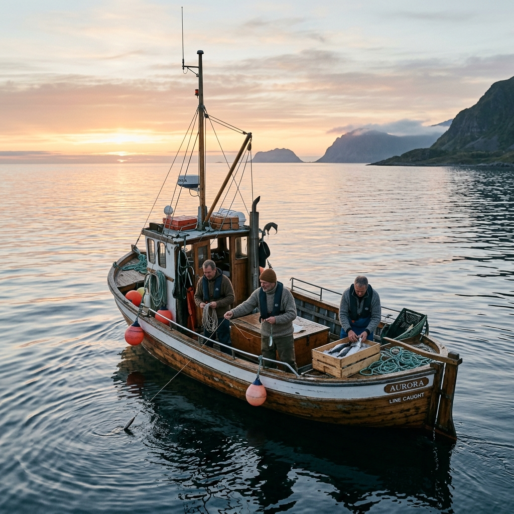
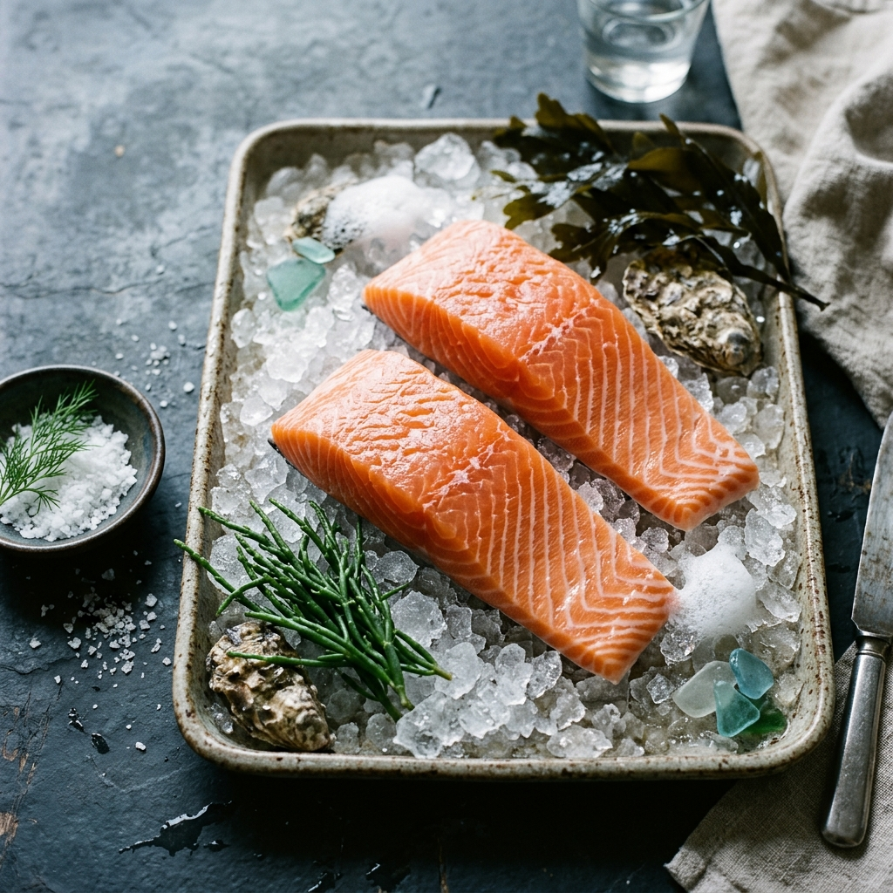

SUSTAINABLE SEAFOOD SOURCED WITH INTEGRITY, DELIVERED WITH PROVENANCE.
Connecting chef-driven kitchens and conscious buyers directly to certified day-boat fishers and eco-aquaculture farms. We deliver wild salmon, yellowfin tuna, sea bass, prawns, and crab via an unbroken 24–48 hour cold chain straight from ocean waters to your table.
WHERE EVERY CATCH HAS A STORY & VERIFIED ORIGIN.
Tide & Trace operates as a dedicated ocean-to-table seafood supplier, eliminating multi-tiered broker networks to connect professional kitchens directly with ethical fisheries. We source exclusively from small-scale coastal fleets in the North Atlantic and Pacific Northwest, wild crab grounds in Alaska, and certified low-density coastal aquaculture lagoons.
Every harvest relies on selective, low-impact methods—including single hook-and-line, deep-water pot traps, and restorative ocean enclosures—strictly avoiding destructive bottom trawling and high-bycatch nets. Hand-graded and immediately chilled, our seafood reaches chefs within 24 to 48 hours of landing backed by scannable harvest data.
45+
100%
OUR SUSTAINABLE SEAFOOD SELECTION
Explore our core portfolio of responsibly wild-caught and eco-farmed species, hand-graded for sashimi bars, fine dining, and culinary excellence.

Wild & Farmed Salmon
Featuring wild-caught Alaskan King and Sockeye Salmon alongside ASC-certified North Atlantic Salmon. Rich in natural omega-3s with a pristine, buttery finish, landed under strict harvest quotas.
View Species DetailsHOW OUR SEAFOOD REACHES YOUR TABLE: THE 4-STAGE COLD CHAIN
From ocean landing to chef walk-in cooler in under 48 hours—monitored at 0°C to 2°C with scannable batch provenance at every transition.
01 HARVEST & CHILL
Day-boat harvesters use selective gear and slush-ice catch at sea to 0°C within minutes.
02 DIGITAL LOT TAG
Landed lots are logged with GPS coordinates, vessel identity, and tamper-proof QR tracking codes.
03 UNBROKEN COLD CHAIN
Smart-sensor chilled transport maintains continuous 0°C–2°C logs without warehouse delays.
04 DIRECT DELIVERY
Delivered straight to restaurants and hospitality kitchens within 24–48 hours of landing.
WHERE OUR SEAFOOD IS SOURCED: ETHICAL WATERS & CERTIFIED FISHERIES.
Our commitment to sustainability defines every species we carry. We source exclusively from verified partners across three primary oceanic regions: the icy waters of the North Atlantic (wild cod, salmon, and mackerel), the protected wild runs of Alaska and the Pacific Rim (wild King Salmon, Sockeye, and Snow Crab), and certified organic coastal aquaculture lagoons (responsibly raised sea bass and king prawns).
By honoring natural seasonal runs, enforcing selective single-line and pot gears that eliminate bycatch, and rejecting chemical additives or preventive antibiotics, we safeguard marine biodiversity while delivering pure, ocean-fresh seafood directly to culinary professionals.
Learn About Our Practices